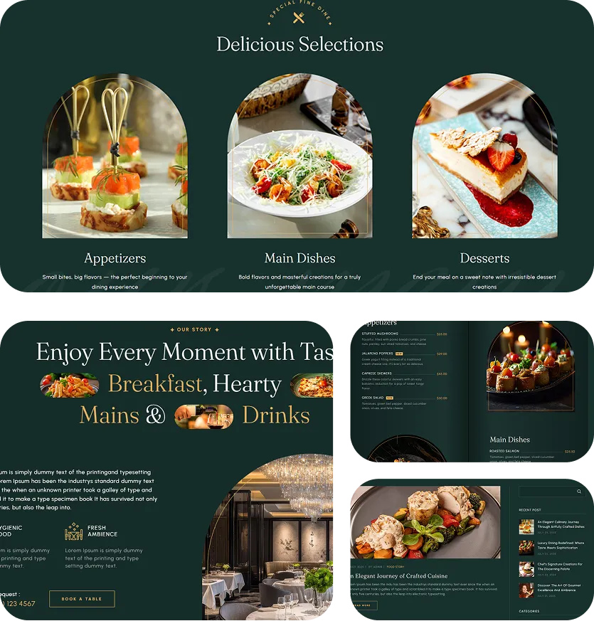
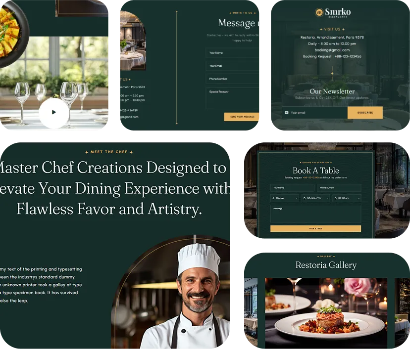

Previous
-
01.
Project Overview
Smrko Restaurant is a comprehensive digital platform designed to transform restaurant operations and customer experiences through seamless online booking and complete restaurant management solutions. Our all-in-one system connects diners with restaurants through intuitive booking features and rich visual experiences.
The platform provides complete restaurant showcase capabilities with detailed restaurant profiles, stunning menu presentations, and immersive visual galleries. Customers can explore restaurants, view dishes, check availability, and make reservations all within one integrated system.
Core Components Delivered
Online Booking System - Real-time reservation management with instant confirmation
Table Booking Management - Smart table allocation and availability tracking
Complete Restaurant Details - Comprehensive restaurant profiles with amenities and information
Landing Page Design - Engaging restaurant showcase with visual storytelling
Dishes Gallery - High-quality food photography with detailed descriptions
Menu Management - Interactive digital menus with pricing and customization options
Restaurant Images - Professional photography showcasing ambiance and dining experiences
Admin Dashboard - Complete restaurant operations and booking management
Smrko Restaurant delivers everything restaurants need to establish strong online presence while providing customers with seamless discovery and booking experiences.
-
02.
Process & Challenge
Creating Smrko Restaurant required understanding both restaurant operations and customer dining preferences to build a platform that serves both audiences effectively while maintaining visual appeal and operational efficiency.

Building brand identity with logo, website, and social media design.
Using content and ads to boost brand engagement.
Start Agenda for any help
The main challenge was creating a dual-purpose platform that serves restaurant owners with powerful management tools while providing diners with engaging discovery and booking experiences. Real-time table availability, dynamic pricing, and reservation coordination required complex backend systems.
Visual presentation was crucial - implementing high-quality image galleries, menu visualization, and restaurant atmosphere showcase while maintaining fast loading times across all devices. The booking system needed to handle peak dining times, special events, and varying restaurant capacities.
Integration of payment processing, automated confirmations, and seamless communication between restaurants and customers required careful coordination of multiple system components.
 -
03.
Summery
Smrko Restaurant successfully delivers a complete restaurant ecosystem that transforms how customers discover, explore, and book dining experiences while providing restaurants with powerful tools to manage operations and showcase their offerings effectively.
Platform Achievement: The integrated approach combines visual storytelling with practical booking functionality, creating increased reservations for restaurants while providing diners with comprehensive information to make informed dining choices.
-
04.
Delivered Solutions
A comprehensive restaurant platform featuring online booking, table management, complete restaurant profiles, stunning visual galleries, interactive menus, and powerful admin tools - everything needed to excel in modern restaurant digital marketing and operations.